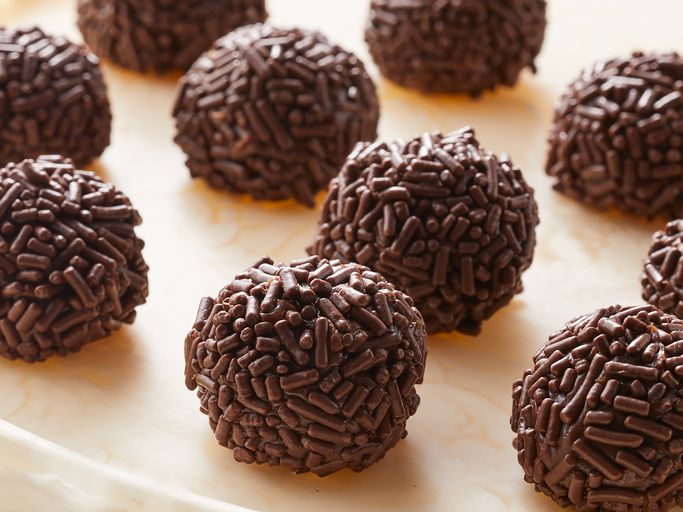

Brigadeiro

Brigadeiro is a great Brazilian dessert
similar to bonbons that's extremely scrumptious and delicious. This sweet is loved here in Brazil. Try it! You can also make it in the microwave; just remember to stir every minute.
Ingredients
- 1 (14 ounce) can sweetened condensed milk
- 3 tablespoons unsweetened cocoa
- 1 tablespoon butter
Steps
- Gather all ingredients.
- Combine condensed milk, cocoa, and butter in a medium saucepan over medium heat. Cook and stir until thickened, about 10 minutes. Remove from heat and let rest until mixture is cool enough to handle.
- Use your hands to shape into small balls and place on a serving plate. Can be eaten at once or chilled until serving.